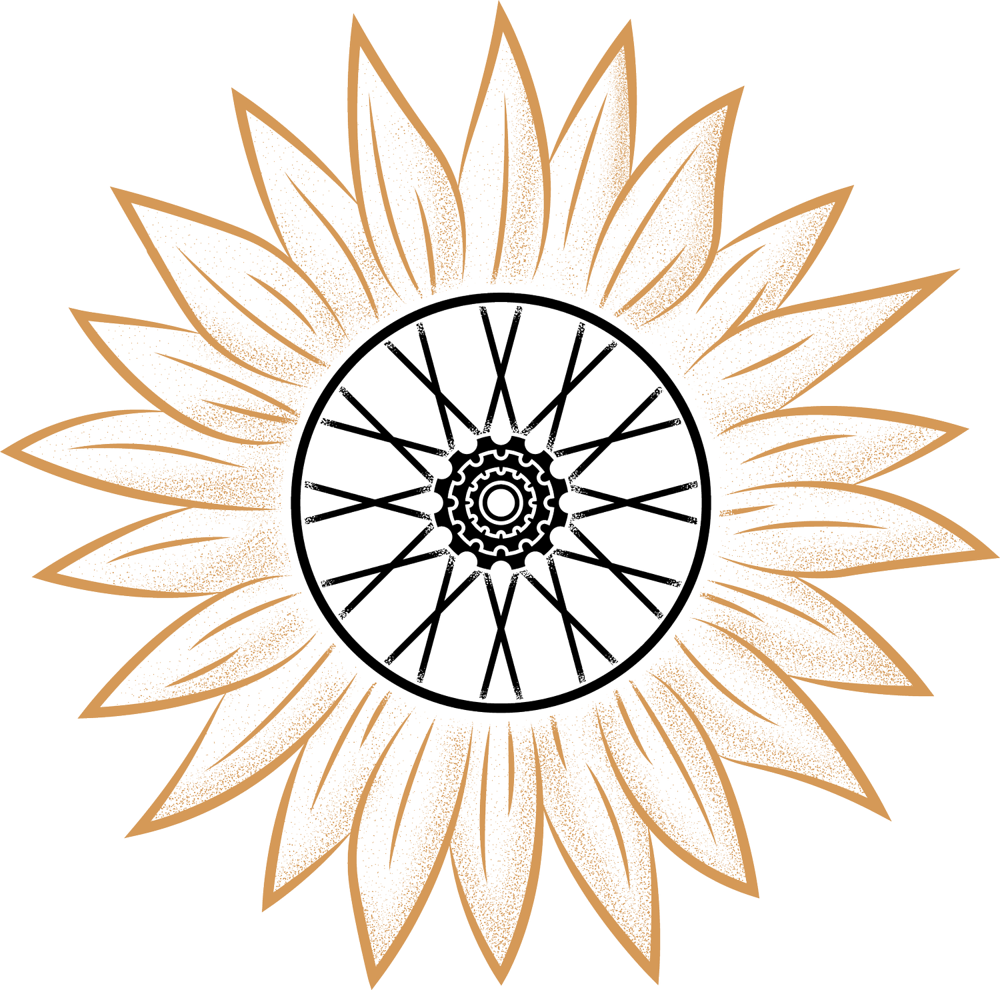
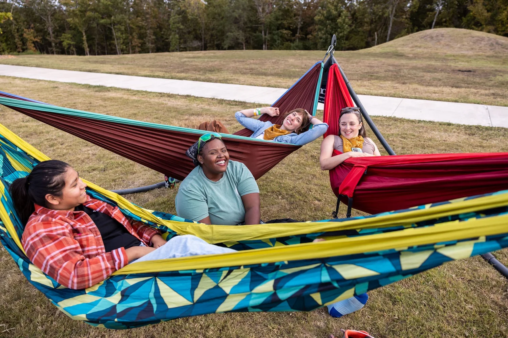
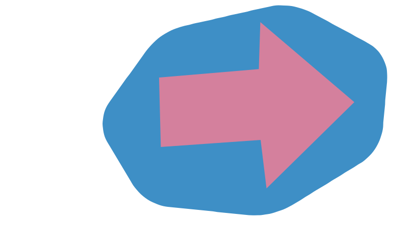

Access
Free and low-cost programming helps lower the barrier to entry.
All Bikes Welcome Presents
A 3-day mountain bike festival for everyone who's ever felt like bikes aren't for them.
Who We Are
All Bikes Welcome is a 501(c)(3) nonprofit based in Northwest Arkansas. Grit MTB Festival is our annual gathering for building access, connection, and confidence in mountain biking.
The festival creates a welcoming place for riders who are brand new, returning, progressing, or already advanced. The thread is the same: learn together, ride together, and make room for more people on bikes.
Ride Bikes. Build Community.


Purpose
Free and low-cost programming helps lower the barrier to entry.
Programming centers marginalized folks in the cycling community.
Riders get space to learn on and off the bike in a supportive environment.
Event Info
Add 2-hour clinics taught by certified instructors. The First Touch clinic is free for folks who are MTB curious and ready to try off-road riding.
Guided rides run throughout the weekend, with options from newbie pace to advanced routes.
Demo bikes are available for free for riders who do not have access to a mountain bike.
Camping is included with festival tickets so the weekend can stay rooted at Centennial Park.

Stay Connected
This page is ready for registration links, schedule blocks, sponsor logos, volunteer calls, and festival photography.